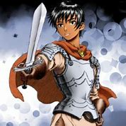
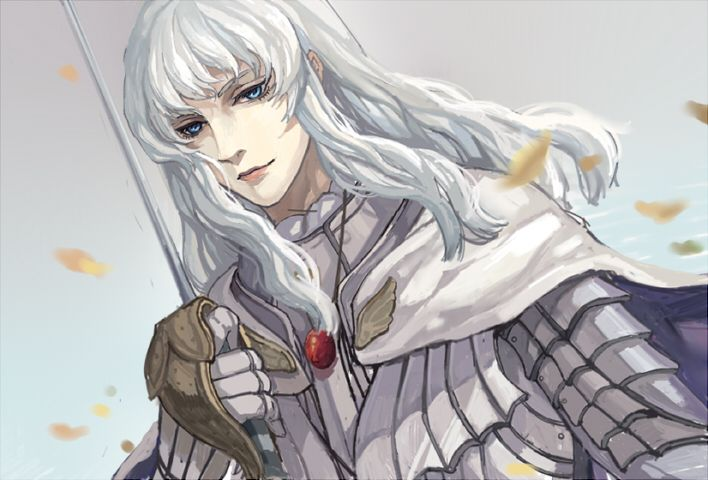

Guts (ガッツ, Gattsu?) est le personnage principal du manga et de la série animée Berserk.
Guts
Personnage de fiction apparaissant dans
Berserk.
Origine inconnu
Cheveux Noir
Yeux Noir
Activité Guerrier en quête de vengeance
Caractéristique Personnage principal
Arme favorite Dragonslayer
modifier Consultez la documentation du modèle
En anglais, guts signifie « tripes », « entrailles ». Ce nom fait référence aux circonstances impitoyables de sa naissance : extirpé des entrailles du cadavre de sa mère pendue à un arbre pour venir s'échouer dans une mare de sang et de chair avant d'être recueilli par Sys, la femme du chef d'un groupe de mercenaires. Ce nom fait également référence à une expression anglaise (to have guts, littéralement « avoir des tripes »).
Guts est le protagoniste de Berserk, Griffith et Casca étant les autres personnages principaux.

Casca:
Casca (キャスカ, Kyasuka?) (parfois orthographié Caska) est le personnage féminin principal du manga Berserk.
Elle fait partie de la Brigade des Faucons, menée par Griffith, dont elle est le second officier après lui. Elle a la réputation d'être la meilleure combattante de la troupe après Griffith et Guts.

Griffith:
Griffith (グリフィス, Gurifisu?) est le principal antagoniste du manga et de la série animée Berserk. Il est présenté au début de la série comme un personnage principal et il deviendra peu à peu le meilleur ami du protagoniste de la série. Physiquement il est décrit par les personnages comme un bel homme (même Guts finira par lui dire qu'il a une belle gueule d'amour, avant que Griffith ne le batte et ne le fasse rejoindre la Brigade des Faucons, la troupe dont il est le chef) avec des cheveux longs et blanc et des yeux bleus similaire à ceux d'un oiseau (on le surnomme d'ailleurs le faucon). Il est svelte mais est cependant en bonne forme et il semble être de taille moyenne. Au combat il porte une armure blanche et un casque ayant la forme d'une tête de faucon, et son épée ressemble à une rapière.